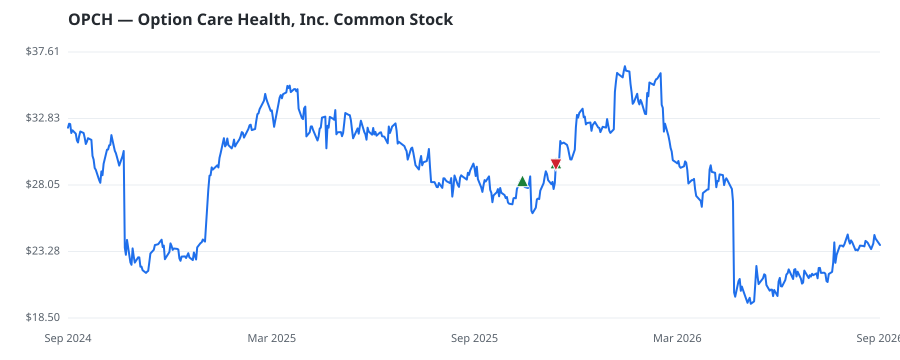

bullish · bearish · n/a — dots: price>SMA10 · SMA10>SMA50 · SMA50>SMA200 · up>down volume (20d)
Health Care Equipment & Services · mid cap · ★ 1 buyer(s) sit on a committee that regulates this industry
Members who bought OPCH earned a dollar-weighted +2.3% from their disclosure dates, versus -0.7% for the S&P 500 over the same holding windows (+3.0% alpha).

▲ green = a disclosed purchase · ▼ red = a disclosed sale (plotted on disclosure date)
Option Care Health Inc is the provider of home and alternate-site infusion services. It provides treatment for bleeding disorders, neurological disorders, heart failure, anti-infectives, and chronic inflammatory disorders, among others. The Company operates in one segment, infusion services. SERVICES-HOME HEALTH CARE SERVICES · website
| Revenue | $5.0B | Net income | $211.8M |
|---|---|---|---|
| Operating income | $321.8M | Diluted EPS | $1.23 |
| Assets | $3.4B | Equity | $1.4B |
| Member | Chamber | Out-performer | Disclosed buys $ | Return on buys |
|---|---|---|---|---|
| Lisa McClain ★ | house | — | $16K | +2.3% |
Disclosed $ figures are bracket midpoints — filings report ranges (e.g. $1,001–$15,000), not exact amounts.
| Fund | Fund alpha vs SPY | Position | % of book |
|---|---|---|---|
| Game Creek Capital, LP | +29% | $1M | 0.6% |
Hedge data: SEC EDGAR 13F · ranked funds beat SPY in >50% of their quarters · fund alpha = mirror-portfolio return minus SPY.